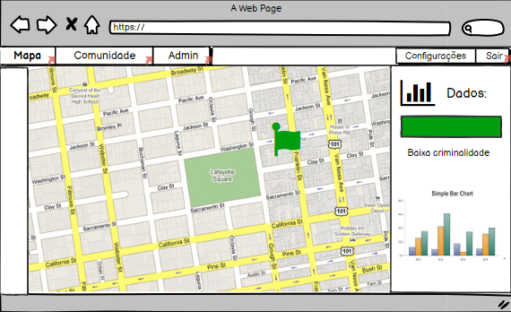
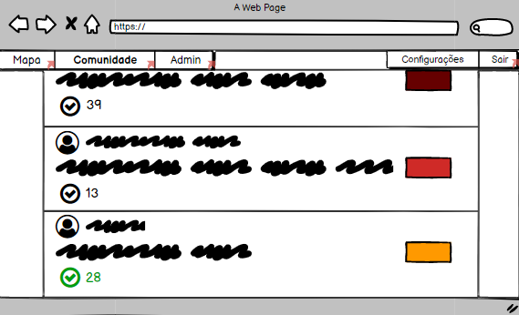

(Este ícone é apenas um exemplo e não representa a logo real do projeto)
Nosso projeto consiste num sistema de segurança com aplicações web e mobile, que busca como objetivo garantir que as pessoas se sintam mais seguras para sair de casa por poderem avaliar a situação das ruas através de nosso aplicativo, que terá tanto uma versão web quanto uma aplicação mobile. Ele utilizará um sistema de denúncias para alertar a população e possuirá um mapa direcionado para a coleta de dados em regiões específicas. Para evitar trotes e usos inadequados do projeto, os usuários ao se cadastrar tem que fornecer seu CPF, RG e seu endereço, para evitar o anonimato em casos de trotes.
Mapa de estatísticas:

Com nosso mapa de estatísticas, os usuários de nosso programa são capazes de coletar dados (como média de criminalidade, número de acidentes por dia, número de denúncias, etc) em uma determinada área, que podem ser usados para pesquisas, trabalhos escolares, coletâneas de dados ou apenas para informação.
Aba comunidade:

Na aba comunidade os usuários podem visualizar as denúncias mais recentes de suas proximidades, podendo confirmar (ou não) a validade de uma informação. A validação ou invalidação de uma denúncia modifica o perfil de um usuário, que recebe notas de acordo com as avaliações de usuários, podendo chegar ao ponto de ser necessária uma verificação por um usuário administrador e até a remover a conta do usuário por infidelidade das denúncias.
Nós temos como objetivo ao realizar esse projeto fornecer as pessoas uma ferramenta interativa em que os cidadãos de determinados locais podem se ajudar informando a si mesmos sobre a situação da segurança local, assim como auxiliar empresas e/ou organizações que visam fazer coletas de dados para pesquisas. O projeto também tem como meta incrementar nossos conhecimentos de informática e de colocar em práticas as disciplinas estudadas em nosso curso técnico.